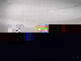
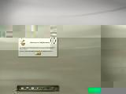
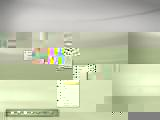
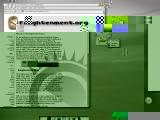

Enlightenment DR17: The Window Manager
On Nov 24th 2004 Enlightenment DR17's codebase was checked into our CVS repository.
In order to build the DR17 window manager you'll need to install the Enlightenment Foundation Libraries. Feel free to browse the CVS tree but please read the build notes before seeking help.
The best way to see DR17 in action is to watch the video. Because of the animation and effects that Edje provides to the new window manager screenshots do it no justice, but none the less here they are:
|  | The startup splash complete with animation. |
|  | Your first view of the desktop. |
|  | Selectable drop shadow types via the DR17 DropShadow Module. |
 |
Starting desktop view again with DR17 Clock Module in the bottom right. |
|  | A good look at DR17 in action. |
{kind=link}
{kind=link}
{kind=link}
{kind=link}
For those who choose to run Enlightenment DR17, icons can be added by untaring /usr/local/share/enlightenment/data/other/favorite_apps.tar.gz into ~/.e/e/applications/favorite and then copy over the EETs that you want on the iconbar into the ~/.e/e/applications/bar directory.
Enlightenment DR17's project manager is Carsten "Rasterman" Haitzler.